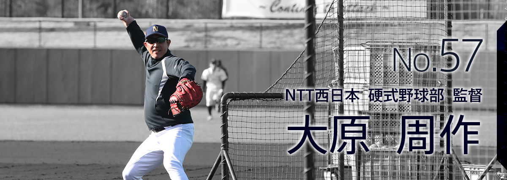

今年にかける想い
Thought to be applied to this year
スローガン
今年のキャンプのスローガンは「挑戦 ～Continue to attack～」。
長田キャプテンを中心に副キャプテンと相談して、「シンプルに、前向きな言葉にしました」と長田キャプテン。昨年の夏以降、大原監督が繰り返し選手に伝えてきた「チャレンジしていこう」という想いを具現化したスローガンだ。
大原監督は「スローガンの提案を受けたとき、ちゃんと聞いてくれていたんだ」と思ったそうだ。
長田キャプテンは、選手同士のミーティングで、「全てに前向きにチャレンジをする意識を持つように伝え、キャンプ中の選手の行動からはその意識が感じられる」と満足そうだった。
シンプルなスローガンだが、そこに託された意味は深い。
“挑戦者としてチームがチャレンジする” “野球に対する姿勢にチャレンジ” “選手1人1人が様々な事にチャレンジ”など。
過去のキャンプ取材中によく出ていた「試合に勝つ」「都市対抗野球優勝」という言葉は、今回の取材では聞くことはほぼ無かったが、代わりに、「積極的に」という言葉をよく耳にした。
大原監督は、積極的なバッティング、次の塁をめざす積極的な走塁などをすることで、「躍動感のある試合」、「見ていて楽しくなる試合」をしたいと言う。その姿を通じて社員の皆さんに感動を与えたいと。
過去のキャンプ、オープン戦では様々な試みを試していたが、いざ公式戦、都市対抗野球となると勝ちを優先したオーソドックスな戦いに戻っていた。しかし『今年は違う！1年を通して、積極的な野球を貫く』と監督の意思は固い。
課題克服へ
今年のチームの課題はズバリ「若い力」。6人の新人選手が加わり、3年目の選手を含めると29人中、実に17人と半分以上を占める。誰が見ても若いチームだ。しかし、レギュラーになるためには中堅・ベテランの実績のある選手を実力で追い越す必要があり、首脳陣からは、中堅・ベテランの力が落ちて自動的にレギュラーになるのでは無くポジションを奪い取れ！とハッパがかけられている。
そのために、キャンプでは同じポジションに若手、中堅、ベテランを配置し、競い合わせていた。
スカウトを兼任する赤嶺コーチは、ちょっと違う目で新人を見ていた。「初めて自分でスカウトした選手。レギュラー争いに加わっていることは良いことだが、反面、結果が出るまで不安がいっぱい」と話す。
大原監督が“今年の1番の強み”と言うのがキャッチャー。実は去年はウィークポイントだったという。今年は2年目の大瀧選手と新人2人の3人でシーズンを戦い抜く。
キャッチャー出身の大原監督の野球の原点は「キャッチャーを中心とした守りの野球」であることに変わりは無く、打たれるのはキャッチャーの責任と言うほど厳しい。実際キャンプでキャッチャーの指導にいつも以上に熱が入っていた。
大瀧選手は昨年の社会人1年間の経験を、新人2人は学生時代の実績をそれぞれ生かし、ピッチャーを引っ張っていってほしいと思っている。
今年からバッテリーコーチとなった田中コーチは、3人はそれぞれ性格が違うので、型にはめず、個性を伸ばしたいと、熱血指導中。
“積極的な配球にチャレンジしてほしい。今はどうしたらいいかをどんどん試してほしい”と。但し、社会人野球の経験不足は、自らの高い分析力で補い、アドバイスすることも忘れていない。
ブルペンでベテランの吉元投手に座る位置を指示されるなど、まだまだ勉強中ではあるが、キャンプ中、1000球以上の投げ込みをしているピッチャーの球を受け、コミュニケーションをとりつつ、キャッチャー3選手の進化は日に日に成果を実らせている。
キャンプ総括
Summary
練習模様

積極的な姿勢、試合展開に象徴されるのが、「機動力＝走る」。走塁を担当する永松コーチは自分の経験と技術をキャンプ中に身振り手振りを交え、丁寧に選手に伝えていた。
実際、紅白戦4試合で19盗塁にチャレンジ。成功、失敗は今は問題視しない。次の塁をめざす気持ちが重要。
実は走塁が苦手な長田キャプテンは、「累に出れば、盗塁以外にも出来る事はある。相手ピッチャーにプレッシャーをかける事は出来る」と。選手1人1人が自分の出来る事を生かすために模索し、チャレンジしていた。
打率よりも出塁率に注目している大原監督は、選手はそれぞれ考え方や取り組みの内容が違うので、自分の積極的なポイントを考えさせ、キャンプで実践させてきているが、概ね満足いく結果と及第点の評価。勝利に結びつける機動力に今年は注目したい。
ピッチャーは連日の投げ込みに加えて、ベテラン・中堅・若手の全員が坂道ダッシュ、ランニングを繰り返し下半身強化に取り組み、バッティングでは初球からバットを振っていく食らいつく姿勢、そして1つ先の塁をめざす積極的な走塁。
選手達から積極性がにじみ出て、やらされている感0（ゼロ）の明るいキャンプというのが今年の感想だ。
コーチ陣の充実

今年のコーチ陣は6人（梅津選手はコーチ兼任）。大原監督の野球を熟知している一色コーチは、大原監督と二人三脚で総合的にチームを見る。実は一色コーチ、8年ぶりの野球部復帰である。「8年間で野球が変わっている。ネット等で選手には最新の知識を身につけている。トレーニング機器も最新になって戸惑うが、あえて自分がやってきた野球を自分の感覚で話すこと、そして8年外から見た野球部の印象などをなるべく簡単に話すこと」に気をつけているという。
コーチ2年目の高本コーチは1年目よりも余裕があり、選手個人を見極め、1人1人の現状にあった指導を心がけているという。今の時期、結果にとらわれがちな選手の目線では無く、注意すべきところを注意するようにし、バッティング全体のレベルアップを図っている。
その他、永松コーチ・赤嶺コーチ・田中コーチも自分が与えられたポジションで専門的に積極的に選手の指導・相談相手として汗を流す日々。
選手と監督のパイプ役となるコーチ陣も充実し、チームの一体感は更に増した。
キャプテンの長田選手の声が朝から晩まで響き渡った今年のキャンプもすでに打ち上げた。
これからJABA大会に出場し、都市対抗野球に挑むNTT西日本硬式野球部。
是非、躍動感あふれるプレーでチームと共に感動を味わってください。


{kind=link}
{kind=link}
{kind=link}
{kind=link}
{kind=link}
{kind=link}
{kind=link}
{kind=link}
{kind=link}
{kind=link}
{kind=link}
{kind=link}
{kind=link}
{kind=link}
{kind=link}
{kind=link}
{kind=link}
{kind=link}
{kind=link}
{kind=link}
{kind=link}
{kind=link}
▲
Menu